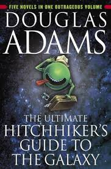

BEST READS
The Personal MBA
A comprehensive overview of business principles and practices. My favorite non-fiction book that helped shape my entrepreneurial mindset.

Crime and Punishment
Dostoevsky's psychological thriller that explores morality, redemption, and the human psyche. A classic that left a lasting impression.

The Hitchhiker's Guide to the Galaxy
An absurdist science fiction comedy that challenges conventional thinking while being incredibly entertaining.
READING STATS
Books Read
42
Current Goal
10/mon
Pages Read
12,458